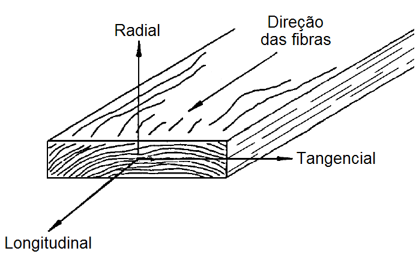
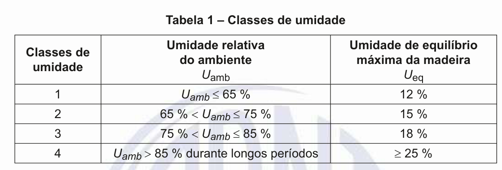
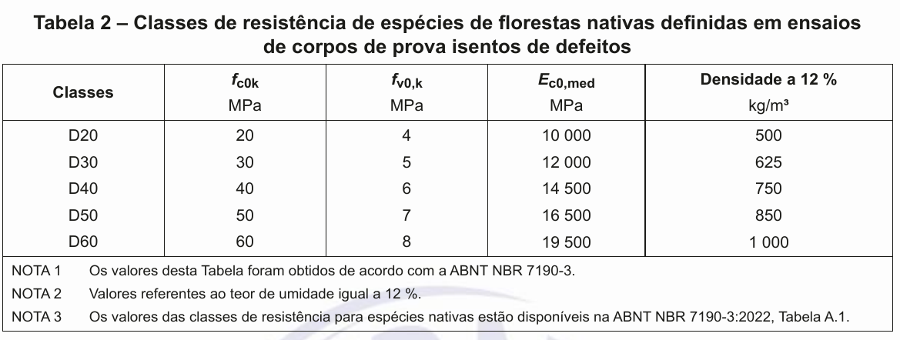
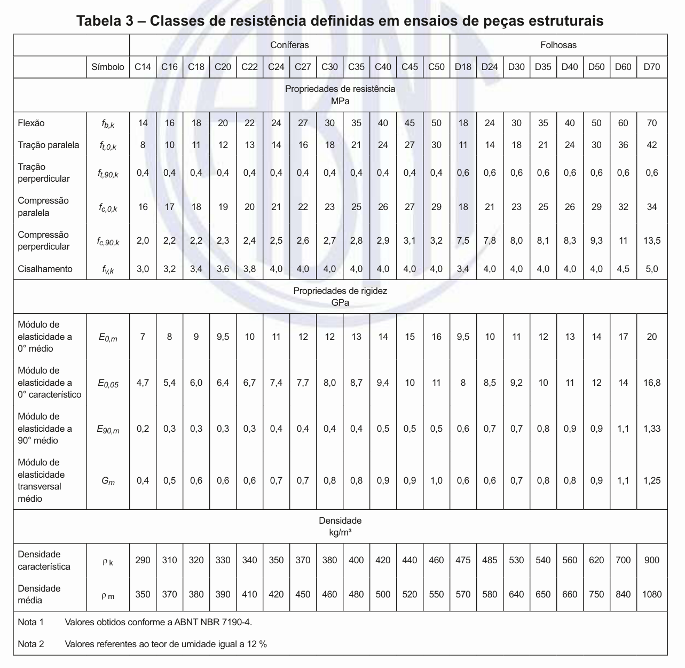

2 - Propriedades da Madeira
2.1 - Anisotropia
Quando um corpo é fisicamente homogêneo, mas com propriedades que variam com a direção, longitudinal,radial e transversal, ele é formado por um material anisotrópico. Esse é o caso da madeira. Ou seja, as propriedades da madeira variam com a direção.
NBR 7190-1:2023
As propriedades da madeira são condicionadas por sua estrutura anatômica, devendo distinguir-se os valores correspondentes à tração dos correspondentes à compressão, bem como os valores correspondentes à direção paralela às fibras dos correspondentes à direção perpendicular às fibras. Devem também se distinguir os valores correspondentes às diferentes classes de umidade.
2.2 - Densidade básica e densidade aparente
A densidade básica da madeira é a massa específica convencional obtida pelo quociente da massa seca pelo volume saturado.
A densidade aparente da madeira é a massa específica obtida pelo quociente da massa pelo volume, ambos à mesma umidade
2.3 - Resistência
A resistência é a aptidão de um matérial suportar tensões.
2.4 - Rigidez
A rigidez dos materiais é medida pelo valor médio do módulo de elasticidade, determinado na fase de comportamento elástico-linear.
2.5 - Umidade
NBR 7190-1:2023
O projeto das estruturas de madeira deve ser feito admitindo-se uma das classes de umidade especificadas na Tabela 1. As classes de umidade têm por finalidade ajustar as propriedades de resistência e de rigidez da madeira em função das condições ambientais onde permanecem as estruturas durante a sua vida útil.
Classes de umidade
O projeto das estruturas de madeira deve ser feito admitindo-se uma das classes de umidade especificadas na Tabela 1.
As classes de umidade têm por finalidade ajustar as propriedades de resistência e de rigidez da madeira em função das condições ambientais onde permanecem asestruturas durante a sua vida útil.
{kind=link}
A condição padrão de referência de umidade tomada pela ABNT NBR 7190-1:2023 é definida pelo teor de umidade de equilíbrio da madeira de 12 %. Todos os valores fornecidos são, então, referidos a essa umidade.
2.6 - Classes de resistência
 {kind=link}
{kind=link}
2.7 - Valores de cálculo(\(X_{d}\))
\(X_{k}\) é valor característico;
\(\gamma_{w}\) é o coeficiente de minoração das propriedades da madeira;
Para estados-limite últimos decorrentes de tensões normais tem o valor básico de 1,4 e para os decorrentes de tensões de cisalhamento tem o valor básico de 1,8.
O coeficiente de ponderação para estados-limite de serviço tem o valor básico de 1,0.
\(k_{mod}\) é coeficiende de modificação.
\[k_{mod} = k_{mod_{1}} \times k_{mod_{2}}\]
{kind=link}
{kind=link}
2.8 - Módulo de elasticidade(\(E\))
O módulo de elasticidade na direção paralela às fibras (\(E_{0}\)) é definido em ensaios de flexão e tem os valores apresentados na Tabela 3.
Ao se usar a Tabela 2, deve ser considerada a igualdade entre os valores médios obtidos na flexão e na compressão paralela às fibras \(E_{0,m} = E_{c0,m}\).
No caso do uso da Tabela 2, \(E_{0,05} = 0.7 \times E_{c0,m}\);
Nas verifcações de estados-limite últimos, \(E_{0, ef} = k_{mod_{1}} \times k_{mod_{2}}\times E_{0,m }\);
Nas verifcações de estados-limite de serviço, consideradar \(E_{0,m}\).
Módulo de elasticidade transversal
2.9 - Exemplos
2.10 - Exercício
(FADESP - 2025 - UNIFESSPA - Engenheiro/Área Civil. Acesso em abril/2025)
As resistências de cálculo à compressão e ao cisalhamento paralelo às fibras (\(f_{c0,d}\) e \(f_{v0,d}\)) de um elemento estrutural de madeira serrada (estados limites últimos), considerando que o material será aplicado em uma estrutura abrigada com umidade relativa do ambiente inferior a 65%, a classe de carregamento é de longa duração e a classe de resistência do material corresponde à classe D60 para espécies florestais nativas definidas em ensaios de corpos de prova isentos de defeitos, de acordo com a ABNT NBR 7190/2022 para projetos de estruturas de madeira, são:
[A] \(f_{c0,d} = 30MPa\) e \(f_{v0,d} = 4MPa\).
[B] \(f_{c0,d} = 24MPa\) e \(f_{v0,d} = 2,67MPa\).
[C] \(f_{c0,d} = 30MPa\) e \(f_{v0,d} = 3,11MPa\).
[D] \(f_{c0,d} = 24MPa\) e \(f_{v0,d} = 3,20MPa\).
[E] \(f_{c0,d} = 42MPa\) e \(f_{v0,d} = 4,20MPa\).